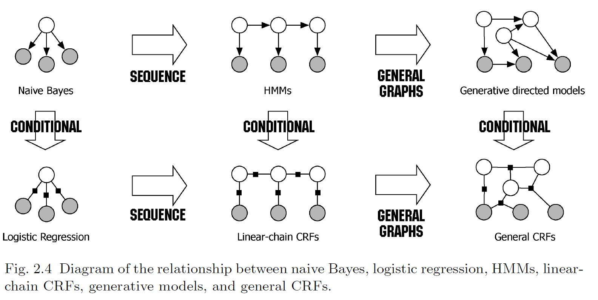

条件随机场（CRF）

本文摘抄自《统计学习方法》
条件随机场（Conditional Random Field, CRF）是给定一组输入随机变量条件下另一组输出随机条件变量的条件概率分布模型，其特点是假设输出随机变量构成马尔可夫随机场。 条件随机场可用于不同的预测问题，本书仅讨论它在标注问题的应用。因此主要讲述线性链（linear chain）条件随机场，这时，问题变成了由输入序列对输出序列预测的判别模型，形式为对数线性模型，其学习方法通常是极大似然估计或正则化的极大似然估计。
概率无向图模型
todo
CRF 的定义和形式
CRF 的定义
CRF 是给定随机变量 $X$ 的条件下，随机变量 $Y$ 的马尔可夫随机场，下面主要讲线性链条件随机场（linear chain conditional random field）
CRF 定义：设 $X$ 和 $Y$ 是随机变量，$P(Y|X)$ 是在给定 $X$ 的条件下 $Y$ 的条件概率分布，若随机变量 $Y$ 构成一个由无向图 $G=(V,E)$ 表示的马尔可夫随机场，即 对于任意结点 $v$ 成立，则称条件概率分布 $P(Y|X)$ 为条件随机场。
其中，$w \sim v$ 表示在图 $G=(V,E)$ 中与结点 $v$ 有边连接的所有结点 $w, w \ne v$ 表示结点 $v$ 以外的所有结点，$Y_v,Y_w$ 为结点 $v, w$ 对应的随机变量
LCCRF 定义：设 $X=(X_1, X_2, …, X_n), ~Y=(Y_1, Y_2, …, Y_n)$ 均为线性链表示的随机变量序列，若在给定随机变量序列 $X$ 的条件下，随机变量序列 $Y$ 的条件概率分布 $P(Y|X)$ 构成条件随机场，即满足马尔可夫性
CRF 的参数化形式
LCCRF 的参数化形式：设 $P(Y|X)$ 为线性链条件随机场，则在随机变量 $X$ 取值为 $x$ 的条件下，随机变量 $Y$ 取值为 $y$ 的条件概率具体如下形式：
其中，$t_k$ 和 $s_l$ 是特征函数，$\lambda_k$ 和 $\mu_l$ 是对应的权值。$Z(x)$ 是规范化因子，求和是在所有可能的输出序列上进行的。
上式表示给定输入序列 $x$，对输出序列 $y$ 预测的条件概率。其中 $t_k$ 是定义在边上的特征函数，称为转移特征，依赖于当前和前一个位置；$s_l$ 是定义在节点上的特征函数，称为状态特征，依赖于当前位置。$t_k$ 和 $s_l$ 都依赖于位置，是局部特征函数。通常，特征函数 $t_k$ 和 $s_l$ 的取值为 1 或 0；当满足特征条件时取值为 1，否则为 0。
CRF 的简化形式
首先，将转移特征和状态特征及其权重用统一的符号表示。设有 $K_1$ 个转移特征，$K_2$ 个状态特征，$K=K_1+K_2$，记： 然后，对转移与状态特征在各个位置 $i$ 求和，记： 再用 $w_k$ 表示特征 $f_k(y,x)$ 的权值，即： 于是简化为：
若用 $w$ 表示权重向量，即： 以 $F(y,x)$ 表示全局特征向量，即： 则 CRF 可写成向量 $w$ 和 $F(y,x)$ 的内积的形式：
CRF 的矩阵形式
对每个标记序列引进特殊的起点和终点状态标记 $y_0=start$ 和 $y_{n+1}=stop$，这时标注序列的概率 $P_w(y x)$ 可以通过矩阵形式表示并有效计算
对观测序列 $x$ 的每一个位置 $i = 1,2,…,n+1$，由于 $y_{i-1}$ 和 $y_i$ 在 $m$ 个标记中取值，可以定义一个 $m$ 阶矩阵随机变量： 矩阵随机变量的元素为： 这样，给定观测序列 $x$ ，相应标记序列 $y$ 的非规范化概率可以通过该序列 $n+1$ 个矩阵的适当元素的乘积 $\prod_{i=1}^{n+1} M_i(y_{i-1},y_i|x)$ 表示。于是，条件概率 $P_w(y|x)$ 是：
其中，规范化因子 $Z_w(x)$ 是以 $start$ 和 $stop$ 为终点通过状态的所有路径 $y_1y_2…y_n$ 的非规范化概率 $\prod_{i=1}^{n+1} M_i(y_{i-1},y_i x)$ 之和
CRF 概率计算算法
前向-后向算法
对每个指标 $i=0,1,…,n+1$，定义前向向量 $\alpha_i(x)$： 递推公式为： 又可以表示为：
其中，$\alpha_i(y_i x)$ 表示为位置 $i$ 的标记是 $y_i$ 并且从 $1$ 到 $i$ 的前部分标记序列的非规范化概率，$y_i$ 可取的值有 $m$ 个，所以 $\alpha_i(x)$ 是 $m$ 维列向量 同样，对每个指标 $i=0,1,…,n+1$，定义后向向量 $\beta_i(x)$： 递推公式为： 又可以表示为：
其中，$\beta_i(y_i x)$ 表示在位置 $i$ 的标记为 $y_i$ 并且从 $i+1$ 到 $n$ 的后部分标记序列的非规范化概率
概率计算
todo
期望值的计算
todo
CRF 学习算法
改进的迭代尺度法
todo
拟牛顿法
todo
CRF 的预测算法
维特比算法（Viterbi algorithm）
则 CRF 可写成向量 $w$ 和 $F(y,x)$ 的内积的形式： 由上式有： 于是，CRF 的预测问题可以转换成求非规范化概率最大的最优路径问题： 这里，路径表示标记序列。其中： 注意，这时只需计算非规范概率，而不必计算概率，可以大大提高效率。为了求解最优路径，可以将问题写成：
其中，$F_i(y_{i-1},y_i,x)$ 是局部特征。
==这一块不是很明白，为什么可以大大提高效率，因为分解开并行计算？还有非规范概率是什么意思？以后找到了答案补充==
首先求出位置 1 的各个标记 $j = 1, 2,…, m$ 的非规范化概率： 一般的，由递推公式，求出到位置 $i$ 的各个标记 $l = 1, 2, …, m$ 的非规范化概率的最大值，同时记录非规范化概率最大值的路径：
==上式中加法，我理解是因为原来的公式是用了 exp 将乘法转换成了加法==
直到 $i=n$ 时终止，这时求得非规范化概率的最大值为： 及最优路径的终点： 由此最优路径终点返回： 求得最优路径 $y^* = (y_1^, y_2^,…,y_n^*)^T$
输入：模型特征向量 $F(y,x)$ 和权值向量 $w$，观测序列 $x = (x_1, x_2, …, x_n)$ 输出：最优路径 $y^* = (y_1^, y_2^,…,y_n^*)$
初始化
递推，对 $i=2,3,…,n$
终止
最优路径回溯，对 $i=n-1,n-2, …, 1$ 求得最优路径 $y^* = (y_1^, y_2^,…,y_n^*)$